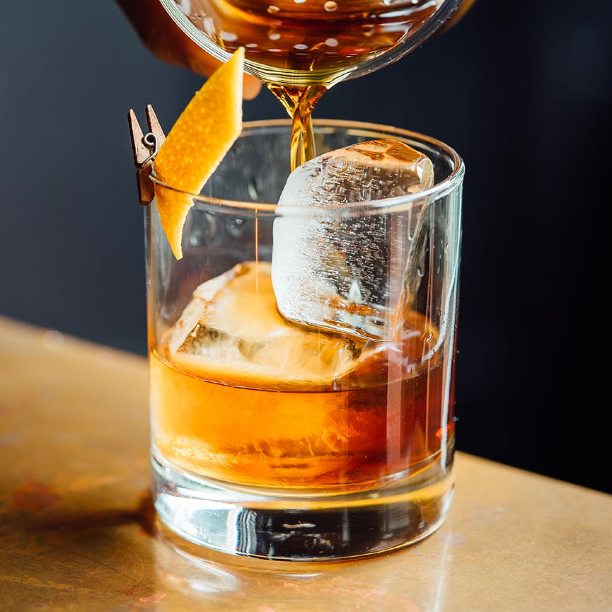

Cognac VS
Fondation VS
Cognac biologique jeune, fruité et expressif, pensé pour une lecture directe du fruit.
A young, fruity and expressive organic Cognac with a direct fruit-forward profile.
Je dédie FONDATION à ma grand-mère Germaine, pionnière de la famille, qui me répétait sans cesse : Ce patrimoine est solide car il est sain, la terre n’a pas besoin d’autre chose que le travail de l’homme et ses connaissances. Les produits chimiques ne sont pas nécessaires pour que la vigne pousse et produise. C’est ce discours impactant qui m’a poussé à crée cette marque.

Dégustation
Tasting markers
Dégustation
FONDATION se caractérise par une belle fraîcheur en bouche des notes fruitées de poire et de pêche ou encore de fleur de vigne. Les premiers tannins du bois révèlent des arômes briochés. Idéal pour réaliser des cocktails ou être consommé sur glace.
Notes sensorielles
Sensory notes
- Bouche :Bois de chêne, brioche, fleur de vigne, pêche, poire, vanille
- Couleur :Jaune or, jaune paille
- Nez :Arômes de fruits frais tels que poire, pêche et fruits compotés (pommes au four et raisins secs dorés)
- Palais :Subtil mélange de fraîcheur et de fruité suivi par la rondeur de notes briochées et vanillées
- Finale :Fraîcheur fruitée de raisin frais et de poire
Détail
Détails produit
- Catégorie
- Cognac VS
- Origine
- France
- Contenance
- 700 ml
- Titre alcoométrique
- 40 % vol
- Cépages
- Ugni Blanc, Colombard, Folle Blanche
- GTIN
- 3322870010826
Valeurs nutritionnelles
| Nutriment | Pour 3 ml | Pour 100 ml |
|---|---|---|
| Valeur énergétique | 27,9 kJ / 6,8 kcal | 931 kJ / 225 kcal |
| Alcool | 0,95 g | 31,6 g |
| Matières grasses | 0 g | 0 g |
| dont acides gras saturés | 0 g | 0 g |
| Glucides | 0 g | 0,3 g |
| dont sucres | 0 g | 0,3 g |
| Protéines | 0 g | 0 g |
| Sel | 0 g | 0 g |